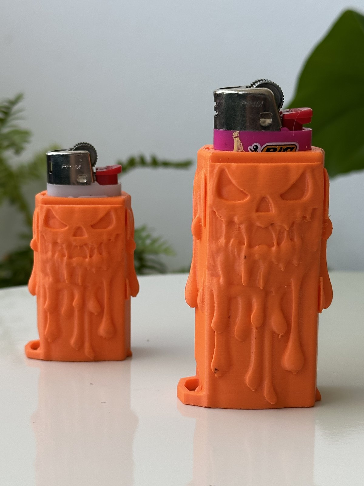

O nome já conta a história: Tabaqu3 é "tabacaria" com o 3 do 3D.

Quem frequenta tabacaria já viu: tem muita peça impressa em 3D por aí, mas quase tudo é modelo pronto, baixado da internet, igual em todo lugar.
A Tabaqu3 nasceu da vontade de fazer o oposto. Pegar um objeto que todo mundo carrega no bolso, o isqueiro, e dar a ele identidade de verdade, com design original e cara de quem usa.
Cada capa é desenhada aqui ou em parceria com artistas, impressa em ABS e produzida sob demanda em Belo Horizonte.
Cada capa diz alguma coisa sobre quem carrega.
Design próprio e collabs com quem faz arte de verdade.
Se dá pra achar igual em qualquer lugar, não é Tabaqu3.
E o que ela não é: séria demais, nem genérica.
[Foto e 2 linhas sobre o Gabriel, fundador. Ex.: "Sou o Gabriel, de BH. Comecei imprimindo capas pros amigos e..." Confirmar com ele.]